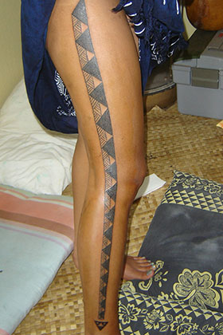
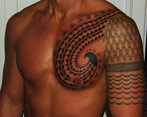

Tattooing was a major part of Polynesian culture. In the islands of Hawaii the practice of tattooing was known as Kakau. Tattoos were called Uhi, and each island had their own distinct imagery and patterns. Like other Polynesian societies, one's tattoos represented major life events, accomplishments, and one's social status.
The Koa had were generally covered in tattoos used to signify their elite status among the lesser warriors and the commoners, their major victories, and intimidating opponents.
